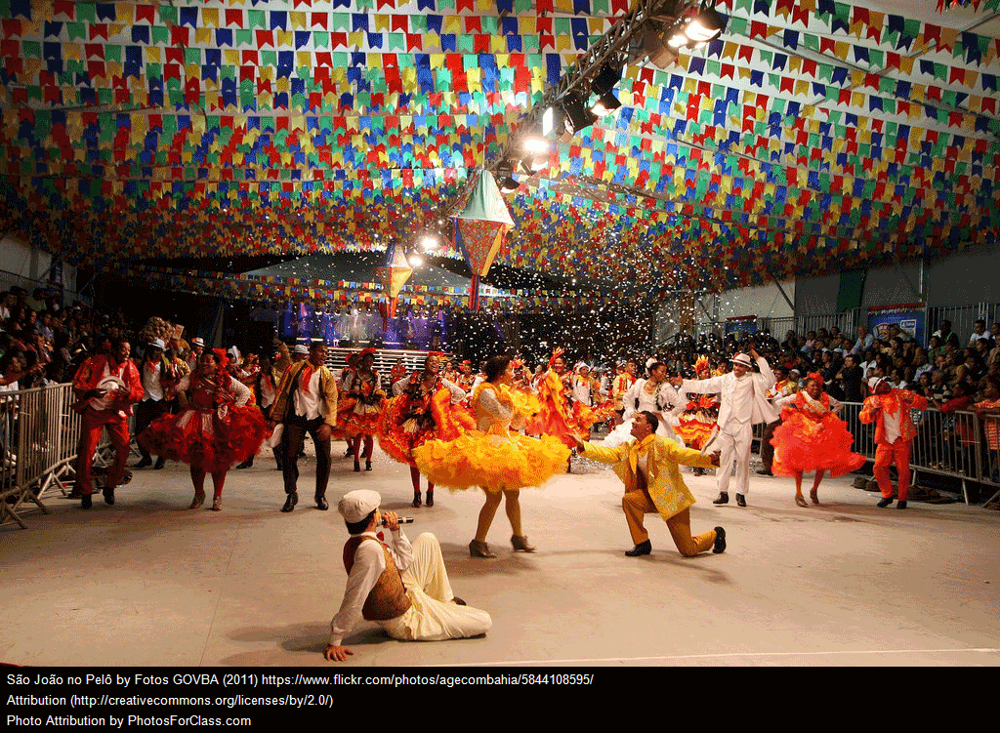
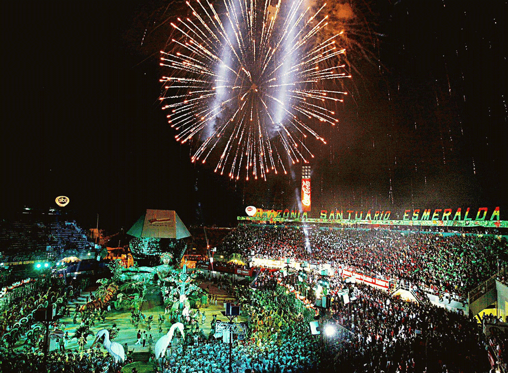

Sources
Images & Articles
Special thanks to the authors and photographers of the images, icons and websites used to compose this project
| type | content | url | author |
|---|---|---|---|
| image |

|
url | Image provided by Pexels from pixabay.com is licensed by CC0 by 1.0 - Creative Commons Zero License |
| image | url | Image provided by Pexels from pixabay.com is licensed by CC0 by 1.0 - Creative Commons Zero License | |
| image |

|
Vector image created by Rodrigo Ornellas. All rights reserved. | |
| image |  | url | Image provided by PhotosForClass.com from FotosGOVBA licensed under CC by 2.0 - Attribution 2.0 Generic License. Photograph taken by Mateus Pereira/Secom. |
| image | url | Image provided by Pexels from pixabay.com licensed under CC0 by 1.0 - Creative Commons Zero License | |
| image |

|
url | This is a faithful photographic reproduction of a two-dimensional, public domain work of art. The official position taken by the Wikimedia Foundation is that "faithful reproductions of two-dimensional public domain works of art are public domain". Image downloaded from Wikipedia as Public Domain |
| image | url | This photograph was produced by Agência Brasil (public Brazilian news agency). Published under CC BY-NC-SA 2.0 - NonCommercial-ShareAlike 2.0 Generic License. Photograph taken by Tânia Rêgo. |
|
| image |  | url | This photograph was produced by Agência Brasil (public Brazilian news agency). This content was published under the CC by 3.0 BR - Creative Commons Attribution 3.0 Brazil License. Photograph taken by Ricardo Stuckert. |
| image |

|
url | From Suvan Chowdhury published under the CC0 by 1.0 - Creative Commons Zero License |
| image | url | From Lukas published under the CC0 by 1.0 - Creative Commons Zero License | |
| image | url | From Stokpic.com published under the CC0 by 1.0 - Creative Commons Zero License | |
| image |

|
url | From Kirstie_J published under the CC0 by 1.0 - Creative Commons Zero License |
| image |

|
Photograph taken by Rodrigo Ornellas. All rights reserved. | |
| image | url | From Caio published under the CC0 by 1.0 - Creative Commons Zero License | |
| articles | Brazilian Carnival - Article from Wikipedia, the free encyclopedia | url | This article is from Wikipedia and is available under the Creative Commons Attribution-ShareAlike License |
| articles | Parintins Folklore Festival - Article from Wikipedia, the free encyclopedia | url | This article is from Wikipedia and is available under the Creative Commons Attribution-ShareAlike License |
| articles | Festa Junina - Article from Wikipedia, the free encyclopedia | url | This article is from Wikipedia and is available under the Creative Commons Attribution-ShareAlike License |
| videos | url | GEOgraphy Focus published under the CC by 4.0 - Creative Commons Attribution 4.0 International License | |
| videos | url | Aguia de Ouro published under the YouTube Default License | |
| videos | url | Bloomberg published under the YouTube Default License |